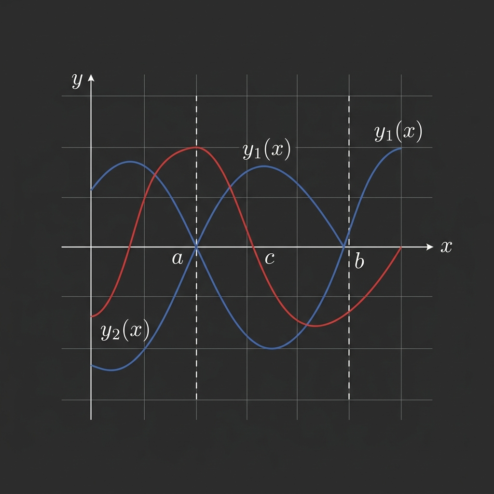

Sturm Separation Theorem

Mathematical Exposition
In the study of ordinary differential equations, Sturm's separation theorem (named after Jacques Charles François Sturm) describes the distribution of zeros of solutions to homogeneous second-order linear ordinary differential equations on a real interval.
Specifically, let $y_1(x)$ and $y_2(x)$ be two linearly independent solutions to the ODE:
$$y''(x) + p(x) y'(x) + q(x) y(x) = 0$$where $p(x)$ and $q(x)$ are continuous real-valued functions on an interval. The theorem asserts that the zeros of $y_1(x)$ and $y_2(x)$ strictly alternate. That is, between any two consecutive zeros of $y_1(x)$, there lies exactly one zero of $y_2(x)$.
The Wronskian & Uniqueness
The core tool in proving this result is the Wronskian of the two solutions, defined as:
$$W(x) = y_1(x) y_2'(x) - y_2(x) y_1'(x)$$By differentiating $W(x)$ and using the ODE, we obtain Abel's identity:
$$W'(x) = y_1 y_2'' - y_2 y_1'' = y_1(-p y_2' - q y_2) - y_2(-p y_1' - q y_1) = -p(x) W(x)$$Solving this first-order linear ODE yields:
$$W(x) = W(x_0) e^{-\int_{x_0}^x p(t) dt}$$Since the exponential factor is strictly positive, the Wronskian $W(x)$ is either identically zero (meaning the solutions are linearly dependent) or never zero on the entire interval. Because $y_1$ and $y_2$ are independent, $W(x) eq 0$ everywhere.
Alternating Zeros Proof Idea
Suppose $a$ and $b$ are consecutive zeros of $y_1(x)$ ($y_1(a) = y_1(b) = 0$). Since $y_1(x)$ is non-zero on $(a, b)$, it must have a constant sign (say, positive). Differentiating $y_1(x)$ at the boundary reveals that the slopes must have opposite signs: $y_1'(a) > 0$ and $y_1'(b) < 0$.
Evaluating the Wronskian at these boundary points gives:
$$W(a) = -y_2(a) y_1'(a) \quad ext{and} \quad W(b) = -y_2(b) y_1'(b)$$Since $W(x)$ never changes sign, $W(a)$ and $W(b)$ must have the same sign. Because $y_1'(a)$ and $y_1'(b)$ have opposite signs, $y_2(a)$ and $y_2(b)$ must also have opposite signs. By the Intermediate Value Theorem, $y_2(x)$ must cross zero at least once on $(a, b)$. By applying Rolle's theorem to the quotient $y_2 / y_1$, we establish that $y_2(x)$ cannot have more than one zero on $(a, b)$, proving uniqueness.
Lean 4 Formalization
Our formal proof in Lean 4 utilizes Mathlib's real analysis and topological spaces libraries. The key proof steps are:
- Establishing the differential equation for the Wronskian $W' = -pW$ by algebra on derivatives.
- Invoking Lipschitz uniqueness for first-order linear ODEs to prove $W(x)$ is non-zero everywhere on the connected domain $J$.
- Proving $y_1$ has a constant sign on $(a, b)$ via path-connectedness/pre-connectivity of the open interval.
- Showing the derivative of $y_1$ at the boundaries $a, b$ has opposite signs, which forces $y_2(a) y_2(b) < 0$ since $W$ preserves its sign.
- Applying the Intermediate Value Theorem to obtain a zero $c \in (a, b)$ for $y_2$.
- Proving uniqueness of $c$ using Rolle's theorem applied to the quotient $y_2(x) / y_1(x)$ on the subinterval.
import Mathlib
namespace Submission
private lemma deriv_pos_of_pos_on_Ioo (f : ℝ → ℝ) (a b : ℝ) (hab : a < b)
(hf : HasDerivAt f (deriv f a) a) (hfa : f a = 0)
(hpos : ∀ x ∈ Set.Ioo a b, 0 < f x) (hne : deriv f a ≠ 0) :
0 < deriv f a := by
rcases lt_or_gt_of_ne hne with h | h
· exfalso
have hslope := hf.tendsto_slope_zero_right
simp only [hfa, sub_zero, smul_eq_mul] at hslope
obtain ⟨t, ht_neg, ht_pos, ht_lt⟩ :=
((hslope.eventually (gt_mem_nhds h)).and
((eventually_nhdsWithin_of_forall fun x (hx : (0:ℝ) < x) => hx).and
(nhdsWithin_le_nhds (Iio_mem_nhds (sub_pos.mpr hab))))).exists
have : f (a + t) < 0 := by
by_contra h_abs; push_neg at h_abs
linarith [mul_nonneg (inv_nonneg.mpr ht_pos.le) h_abs]
linarith [hpos (a + t) ⟨by linarith, by linarith⟩]
· exact h
private lemma deriv_neg_of_pos_on_Ioo (f : ℝ → ℝ) (a b : ℝ) (hab : a < b)
(hf : HasDerivAt f (deriv f b) b) (hfb : f b = 0)
(hpos : ∀ x ∈ Set.Ioo a b, 0 < f x) (hne : deriv f b ≠ 0) :
deriv f b < 0 := by
rcases lt_or_gt_of_ne hne with h | h
· exact h
· exfalso
have hslope := hf.tendsto_slope_zero_left
simp only [hfb, sub_zero, smul_eq_mul] at hslope
obtain ⟨t, ht_pos_prod, ht_neg, ht_gt⟩ :=
((hslope.eventually (lt_mem_nhds h)).and
((eventually_nhdsWithin_of_forall fun x (hx : x < (0:ℝ)) => hx).and
(nhdsWithin_le_nhds (Ioi_mem_nhds (sub_neg.mpr hab))))).exists
have : f (b + t) < 0 := by
by_contra h_abs; push_neg at h_abs
linarith [mul_nonpos_of_nonpos_of_nonneg (inv_nonpos.mpr ht_neg.le) h_abs]
linarith [hpos (b + t) ⟨by linarith, by linarith⟩]
open Set in
theorem sturm_separation (p q y₁ y₂ : ℝ → ℝ) (a b : ℝ) (hab : a < b)
(J : Set ℝ) (hJ_open : IsOpen J) (hJ_conn : IsPreconnected J)
(hJ_sub : Set.Icc a b ⊆ J)
(hp : ContinuousOn p J) (hq : ContinuousOn q J)
(hy₁ : ∀ x ∈ J, HasDerivAt y₁ (deriv y₁ x) x)
(hy₁' : ∀ x ∈ J, HasDerivAt (deriv y₁) (-(p x * deriv y₁ x + q x * y₁ x)) x)
(hy₂ : ∀ x ∈ J, HasDerivAt y₂ (deriv y₂ x) x)
(hy₂' : ∀ x ∈ J, HasDerivAt (deriv y₂) (-(p x * deriv y₂ x + q x * y₂ x)) x)
(hW : ∃ x₀ ∈ J, y₁ x₀ * deriv y₂ x₀ - y₂ x₀ * deriv y₁ x₀ ≠ 0)
(hza : y₁ a = 0) (hzb : y₁ b = 0)
(hne : ∀ x ∈ Set.Ioo a b, y₁ x ≠ 0) :
∃! c, c ∈ Set.Ioo a b ∧ y₂ c = 0 := by
set W : ℝ → ℝ := fun x => y₁ x * deriv y₂ x - y₂ x * deriv y₁ x with hW_def
have ha_J : a ∈ J := hJ_sub (left_mem_Icc.mpr hab.le)
have hb_J : b ∈ J := hJ_sub (right_mem_Icc.mpr hab.le)
have hIoo_J : Ioo a b ⊆ J := fun x hx => hJ_sub (Ioo_subset_Icc_self hx)
have hJ_ord : OrdConnected J := isPreconnected_iff_ordConnected.mp hJ_conn
-- STEP 1: W' = -pW
have hW_deriv : ∀ x ∈ J, HasDerivAt W (-p x * W x) x := by
intro x hx
convert (hy₁ x hx).mul (hy₂' x hx) |>.sub ((hy₂ x hx).mul (hy₁' x hx)) using 1
simp only [hW_def]; ring
-- Helper: build ODE uniqueness argument on an interval
have ode_unique_on_Ioo : ∀ (α β : ℝ), α < β → Icc α β ⊆ J →
∀ t₀ ∈ Ioo α β, W t₀ = 0 → ∀ x ∈ Ioo α β, W x = 0 := by
intro α β hαβ hIJ t₀ ht₀ hWt₀
obtain ⟨C, hCnn, hC⟩ : ∃ C : ℝ, 0 ≤ C ∧ ∀ t ∈ Icc α β, |p t| ≤ C := by
obtain ⟨R, hR⟩ := (isCompact_Icc.image_of_continuousOn (hp.mono hIJ)).isBounded
|>.subset_closedBall 0
exact ⟨max R 0, le_max_right _ _, fun t ht => by
have := hR (mem_image_of_mem p ht)
rw [Metric.mem_closedBall, Real.dist_0_eq_abs] at this; linarith [le_max_left R 0]⟩
set K : NNReal := ⟨C, hCnn⟩
exact ODE_solution_unique_of_mem_Ioo
(K := K)
(fun t ht => by
rw [lipschitzOnWith_univ]; exact LipschitzWith.of_dist_le_mul fun x y => by
simp only [dist_eq_norm, ← mul_sub, norm_mul, norm_neg, Real.norm_eq_abs]
exact mul_le_mul_of_nonneg_right (hC t (Ioo_subset_Icc_self ht)) (abs_nonneg _))
ht₀
(fun t ht => ⟨hW_deriv t (hIJ (Ioo_subset_Icc_self ht)), mem_univ _⟩)
(fun _ _ => ⟨by simp [hasDerivAt_const], mem_univ _⟩)
hWt₀
-- STEP 2: W ≠ 0 on J
have hW_ne : ∀ x ∈ J, W x ≠ 0 := by
obtain ⟨x₀, hx₀J, hx₀ne⟩ := hW
intro t₀ ht₀J hWt₀
obtain ⟨ε₁, hε₁, hB₁⟩ := Metric.isOpen_iff.mp hJ_open t₀ ht₀J
obtain ⟨ε₂, hε₂, hB₂⟩ := Metric.isOpen_iff.mp hJ_open x₀ hx₀J
have ht_l : t₀ - ε₁/2 ∈ J := hB₁ (by
rw [Metric.mem_ball, dist_comm, Real.dist_eq, sub_sub_cancel, abs_of_pos (half_pos hε₁)]
linarith)
have ht_r : t₀ + ε₁/2 ∈ J := hB₁ (by
rw [Metric.mem_ball, Real.dist_eq, add_sub_cancel_left, abs_of_pos (half_pos hε₁)]
linarith)
have hx_l : x₀ - ε₂/2 ∈ J := hB₂ (by
rw [Metric.mem_ball, dist_comm, Real.dist_eq, sub_sub_cancel, abs_of_pos (half_pos hε₂)]
linarith)
have hx_r : x₀ + ε₂/2 ∈ J := hB₂ (by
rw [Metric.mem_ball, Real.dist_eq, add_sub_cancel_left, abs_of_pos (half_pos hε₂)]
linarith)
rcases le_or_gt t₀ x₀ with h_le | h_lt
· exact hx₀ne (ode_unique_on_Ioo _ _ (by linarith) (hJ_ord.out ht_l hx_r)
t₀ ⟨by linarith, by linarith⟩ hWt₀ x₀ ⟨by linarith, by linarith⟩)
· exact hx₀ne (ode_unique_on_Ioo _ _ (by linarith) (hJ_ord.out hx_l ht_r)
t₀ ⟨by linarith, by linarith⟩ hWt₀ x₀ ⟨by linarith, by linarith⟩)
-- STEP 3: y₂(a),y₂(b),y₁'(a),y₁'(b) ≠ 0
have hy₂a : y₂ a ≠ 0 := fun h => hW_ne a ha_J (by simp [hW_def, hza, h])
have hy₂b : y₂ b ≠ 0 := fun h => hW_ne b hb_J (by simp [hW_def, hzb, h])
have hy₁'a : deriv y₁ a ≠ 0 := fun h => hW_ne a ha_J (by simp [hW_def, hza, h])
have hy₁'b : deriv y₁ b ≠ 0 := fun h => hW_ne b hb_J (by simp [hW_def, hzb, h])
-- STEP 4: y₁ has constant sign on (a,b)
have hy₁_cont : ContinuousOn y₁ (Icc a b) :=
fun x hx => (hy₁ x (hJ_sub hx)).continuousAt.continuousWithinAt
have hy₁_sign : (∀ x ∈ Ioo a b, 0 < y₁ x) ∨ (∀ x ∈ Ioo a b, y₁ x < 0) := by
obtain ⟨c, hc⟩ : (Ioo a b).Nonempty := nonempty_Ioo.mpr hab
rcases lt_or_gt_of_ne (hne c hc) with hcn | hcp
· right; intro x hx; rcases lt_or_gt_of_ne (hne x hx) with h | h
· exact h
· exact absurd
(isPreconnected_Ioo.intermediate_value₂ hc hx
(hy₁_cont.mono Ioo_subset_Icc_self) continuousOn_const hcn.le h.le).choose_spec.2
(hne _ (isPreconnected_Ioo.intermediate_value₂ hc hx
(hy₁_cont.mono Ioo_subset_Icc_self) continuousOn_const hcn.le h.le).choose_spec.1)
· left; intro x hx; rcases lt_or_gt_of_ne (hne x hx) with h | h
· exact absurd
(isPreconnected_Ioo.intermediate_value₂ hx hc
(hy₁_cont.mono Ioo_subset_Icc_self) continuousOn_const h.le hcp.le).choose_spec.2
(hne _ (isPreconnected_Ioo.intermediate_value₂ hx hc
(hy₁_cont.mono Ioo_subset_Icc_self) continuousOn_const h.le hcp.le).choose_spec.1)
· exact h
-- STEP 5: y₂(a)·y₂(b) < 0
have hy₂_opp : y₂ a * y₂ b < 0 := by
have hWa : W a = -y₂ a * deriv y₁ a := by simp [hW_def, hza]
have hWb : W b = -y₂ b * deriv y₁ b := by simp [hW_def, hzb]
have hW_cont : ContinuousOn W (Icc a b) :=
fun x hx => (hW_deriv x (hJ_sub hx)).continuousAt.continuousWithinAt
-- W(a) and W(b) have the same sign (W continuous, nonzero on connected [a,b])
have hWab_pos : 0 < W a * W b := by
rcases lt_or_gt_of_ne (hW_ne a ha_J) with ha' | ha' <;>
rcases lt_or_gt_of_ne (hW_ne b hb_J) with hb' | hb'
· exact mul_pos_of_neg_of_neg ha' hb'
· exact absurd (isPreconnected_Icc.intermediate_value₂
(left_mem_Icc.mpr hab.le) (right_mem_Icc.mpr hab.le)
hW_cont continuousOn_const ha'.le hb'.le).choose_spec.2
(hW_ne _ (hJ_sub (isPreconnected_Icc.intermediate_value₂
(left_mem_Icc.mpr hab.le) (right_mem_Icc.mpr hab.le)
hW_cont continuousOn_const ha'.le hb'.le).choose_spec.1))
· exact absurd (isPreconnected_Icc.intermediate_value₂
(right_mem_Icc.mpr hab.le) (left_mem_Icc.mpr hab.le)
hW_cont continuousOn_const hb'.le ha'.le).choose_spec.2
(hW_ne _ (hJ_sub (isPreconnected_Icc.intermediate_value₂
(right_mem_Icc.mpr hab.le) (left_mem_Icc.mpr hab.le)
hW_cont continuousOn_const hb'.le ha'.le).choose_spec.1))
· exact mul_pos ha' hb'
rw [hWa, hWb] at hWab_pos
-- hWab_pos : 0 < (-y₂ a * y₁' a) * (-y₂ b * y₁' b) = y₂ a * y₁' a * y₂ b * y₁' b
-- y₁'(a) * y₁'(b) < 0 (opposite signs)
-- Therefore y₂(a) * y₂(b) < 0
rcases hy₁_sign with hpos | hneg
· have h1 := deriv_pos_of_pos_on_Ioo y₁ a b hab (hy₁ a ha_J) hza hpos hy₁'a
have h2 := deriv_neg_of_pos_on_Ioo y₁ a b hab (hy₁ b hb_J) hzb hpos hy₁'b
nlinarith [mul_neg_of_pos_of_neg h1 h2]
· have hpos' : ∀ x ∈ Ioo a b, 0 < (-y₁) x := fun x hx => neg_pos.mpr (hneg x hx)
have h1 := deriv_pos_of_pos_on_Ioo (-y₁) a b hab
(by convert (hy₁ a ha_J).neg using 1; simp [deriv_neg]) (by simp [hza]) hpos'
(by simp [deriv_neg]; exact hy₁'a)
have h2 := deriv_neg_of_pos_on_Ioo (-y₁) a b hab
(by convert (hy₁ b hb_J).neg using 1; simp [deriv_neg]) (by simp [hzb]) hpos'
(by simp [deriv_neg]; exact hy₁'b)
simp [deriv_neg] at h1 h2
nlinarith [mul_neg_of_neg_of_pos h1 h2]
-- STEP 6: Existence
have hy₂_cont : ContinuousOn y₂ (Icc a b) :=
fun x hx => (hy₂ x (hJ_sub hx)).continuousAt.continuousWithinAt
have existence : ∃ c ∈ Ioo a b, y₂ c = 0 := by
rcases lt_or_gt_of_ne hy₂a with han | hap
· -- y₂(a) < 0, y₂(b) > 0
have hbp : 0 < y₂ b := by nlinarith
obtain ⟨c, hc, hfc⟩ := intermediate_value_Icc hab.le hy₂_cont
(show (0 : ℝ) ∈ Icc (y₂ a) (y₂ b) from ⟨han.le, hbp.le⟩)
exact ⟨c, ⟨lt_of_le_of_ne hc.1 (by rintro rfl; linarith),
lt_of_le_of_ne hc.2 (by rintro rfl; linarith)⟩, hfc⟩
· -- y₂(a) > 0, y₂(b) < 0
have hbn : y₂ b < 0 := by nlinarith
obtain ⟨c, hc, hfc⟩ := intermediate_value_Icc' hab.le hy₂_cont
(show (0 : ℝ) ∈ Icc (y₂ b) (y₂ a) from ⟨hbn.le, hap.le⟩)
exact ⟨c, ⟨lt_of_le_of_ne hc.1 (by rintro rfl; linarith),
lt_of_le_of_ne hc.2 (by rintro rfl; linarith)⟩, hfc⟩
-- STEP 7: Uniqueness via Rolle on y₂/y₁
obtain ⟨c, hc, hc0⟩ := existence
refine ⟨c, ⟨hc, hc0⟩, ?_⟩
rintro d ⟨hd, hd0⟩
by_contra hcd
-- WLOG c < d (otherwise swap)
-- Apply Rolle's theorem to y₂/y₁ on [min c d, max c d]
have rolle : ∀ (u v : ℝ), u ∈ Ioo a b → v ∈ Ioo a b → y₂ u = 0 → y₂ v = 0 →
u < v → False := by
intro u v hu hv hu0 hv0 huv
set f := fun x => y₂ x / y₁ x
have hf_cont : ContinuousOn f (Icc u v) :=
ContinuousOn.div (hy₂_cont.mono (Icc_subset_Icc hu.1.le hv.2.le))
(hy₁_cont.mono (Icc_subset_Icc hu.1.le hv.2.le))
(fun x hx => hne x ⟨lt_of_lt_of_le hu.1 hx.1, lt_of_le_of_lt hx.2 hv.2⟩)
have hf_eq : f u = f v := by simp [f, hu0, hv0]
have hf_deriv : ∀ x ∈ Ioo u v, HasDerivAt f (W x / y₁ x ^ 2) x := by
intro x hx
have hxab : x ∈ Ioo a b := ⟨lt_trans hu.1 hx.1, lt_trans hx.2 hv.2⟩
have := (hy₂ x (hIoo_J hxab)).div (hy₁ x (hIoo_J hxab)) (hne x hxab)
convert this using 1; simp only [hW_def]; field_simp
obtain ⟨ξ, hξ, hξ0⟩ := exists_hasDerivAt_eq_zero huv hf_cont hf_eq hf_deriv
have hξab : ξ ∈ Ioo a b := ⟨lt_trans hu.1 hξ.1, lt_trans hξ.2 hv.2⟩
rcases div_eq_zero_iff.mp hξ0 with h | h
· exact hW_ne ξ (hIoo_J hξab) h
· exact hne ξ hξab (pow_eq_zero_iff (by norm_num : 2 ≠ 0) |>.mp h)
rcases lt_or_gt_of_ne hcd with hlt | hlt
· exact rolle d c hd hc hd0 hc0 hlt -- d < c
· exact rolle c d hc hd hc0 hd0 hlt -- c < d
end Submission